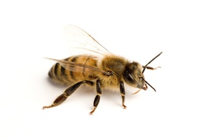

Этот текст находится в левой части страницы. Он содержит некоторый двухуровневый список.
-
Начинаем прямо с третьего элемента
- Первая строчка;
- Вторая строчка;
- Третья строчка.
-
А это уже следующий номер
- Первая строчка;
- Вторая строчка.
-
Последний пункт
- Первая строчка;
- Вторая строчка;
- Третья строчка.

Основное задание состоит в том, чтобы воспроизвести возможно более точно форматирование этой HTML-странички, чтобы она выглядела примерно одинаково в разных браузерах.
Разумеется, не обязательно в точности воспроизводить текст, и тем более, картинку.
Речь идет о расположении и выравнивании фрагментов текста, цветов фона и текста, позиционирования отдельных блоков и картинки.
Пожалуйста, не используйте таблицы для позиционирования фрагментов текста!